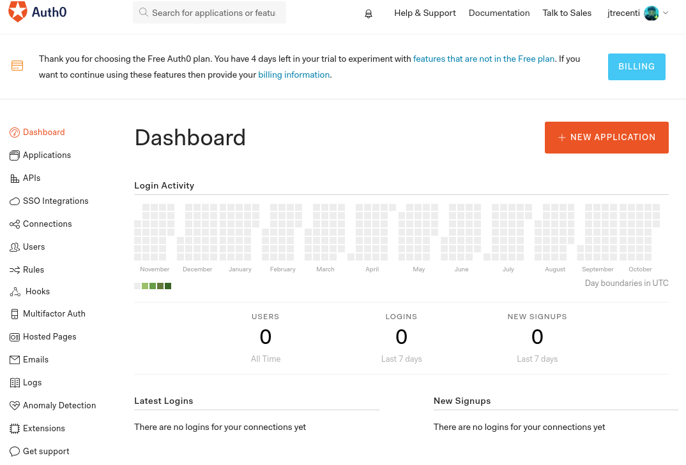

The goal of {auth0} is to implement an authentication scheme to Shiny using OAuth Apps through the freemium service Auth0.
Installation
You can install {auth0} from CRAN with:
You can also install the development version from github with:
Tutorial
To create your authenticated shiny app, you need to follow the five steps below.
Step 1: Create an Auth0 account
- Go to auth0.com
- Click “Sign Up”
- You can create an account with a user name and password combination, or by signing up with your GitHub or Google accounts.
Step 2: Create an Auth0 application
After logging into Auth0, you will see a page like this:

- Click on “+ Create Application”
- Give a name to your app
- Select “Regular Web Applications” and click “Create”
Step 3: Configure your application
- Go to the Settings in your selected application. You should see a page like this:

- Add
http://localhost:8080to the “Allowed Callback URLs”, “Allowed Web Origins” and “Allowed Logout URLs”.- You can change
http://localhost:8080to another port.
- You can change
- Add the remote server where you are going to deploy your shiny app to the same boxes.
- Just make sure that these addresses are correct. If you are placing your app inside a folder (e.g. https://johndoe.shinyapps.io/fooBar), don’t include the folder (
fooBar) in “Allowed Web Origins”.
- Just make sure that these addresses are correct. If you are placing your app inside a folder (e.g. https://johndoe.shinyapps.io/fooBar), don’t include the folder (
- Click “Save”
Now let’s go to R!
Step 4: Create your shiny app and fill the _auth0.yml file
- Create a configuration file for your shiny app by calling
auth0::use_auth0():
- You can set the directory where this file will be created using the
path=parameter. See?auth0::use_auth0for details. - Your
_auth0.ymlfile should be like this:
name: myApp
remote_url: ''
auth0_config:
api_url: !expr paste0('https://', Sys.getenv("AUTH0_USER"), '.auth0.com')
credentials:
key: !expr Sys.getenv("AUTH0_KEY")
secret: !expr Sys.getenv("AUTH0_SECRET")- Run
usethis::edit_r_environ()and add these three environment variables:
AUTH0_USER=johndoe
AUTH0_KEY=5wugt0W...
AUTH0_SECRET=rcaJ0p8...There’s how you identify each of them (see the image below):
-
AUTH0_USERis your username, which can be found on the top corner of the site. -
AUTH0_KEYis your Client ID, which can be copied from inside the app page. -
AUTH0_SECRETis your Client Secret, which can be copied from the app page.

More about environment variables here. You can also fill these information directly in the _auth0.yml file (see below). If you do so, don’t forget to save the _auth0.yml file after editing it.
- Save and restart your session.
- Write a simple shiny app in a
app.Rfile, like this:
library(shiny)
ui <- fluidPage(
fluidRow(plotOutput("plot"))
)
server <- function(input, output, session) {
output$plot <- renderPlot({
plot(1:10)
})
}
# note that here we're using a different version of shinyApp!
auth0::shinyAppAuth0(ui, server)Note: If you want to use a different path to the auth0 configuration file, you can either pass it to shinyAppAuth0() or set the auth0_config_file option by running options(auth0_config_file = "path/to/file").
Step 5: Run!
You can try your app running
If everything is OK, you should be forwarded to a login page and, after logging in or signing up, you’ll be redirected to your app.
If you are running your app in a remote server like shinyapps.io or your own server, and if your app is in a subfolder of the host (like https://johndoe.shinyapps.io/fooBar), you must include your remote URL in the remote_url parameter.
You can also force {auth0} to use the local URL setting options(auth0_local = TRUE). This can useful if you’re running an app inside a Docker container.
Environment variables and multiple Auth0 apps
If you are using {auth0} for just one shiny app or you are running many apps for the same user database, the recommended workflow is using the environment variables AUTH0_KEY and AUTH0_SECRET.
However, if you are running many shiny apps and want to use different login settings, you must create many Auth0 apps. Hence, you’ll have many Cliend IDs and Client Secrets to use. n this case, global environment variables will be unproductive because you’ll need to change them every time you change the app you are developing.
There are two options in this case:
- (Recommended) Add environment variables inside the repository of your application, using
usethis::edit_r_environ("project"). - (Not recommended) Add the Client ID and Secret directly in the _auth0.yml file:
The best option in this case is to simply add the Client ID and Secret directly in the _auth0.yml file:
name: myApp
remote_url: ''
auth0_config:
api_url: https://<USERNAME>.auth0.com
credentials:
key: <CLIENT_ID>
secret: <CLIENT_SECRET>Example:
name: myApp
remote_url: ''
auth0_config:
api_url: https://johndoe.auth0.com
credentials:
key: cetQp0e7bdTNGrkrHpuF8gObMVl8vu
secret: C6GHFa22mfliojqPyKP_5K0ml4TituWrOhYvLdTa7veIyEU3Q10R_-If-7Sh6TcAlthough possible, the latter option is less secure and consequently not recommended because it’s easy to forget passwords there and commit them in public repositories, for example.
ui.R/server.R
To make {auth0} work using an ui.R/server.R framework, you’ll need to wrap your ui object/function with auth0_ui() and your server function with auth0_server(). Here’s a small working example:
server.R
{auth0} will try to find the _auth0.yml using the same strategy than the app.R framework: first from options(auth0_config_file = "path/to/file") and then fixing "./_auth0.yml". Both auth0_ui() and auth0_server() have a info= parameter where you can pass either the path of the _auth0.yml file or the object returned by auth0_info() function.
Audience parameter
To authorize a client to make API calls against a remote server, the authorization request should include an audience parameter (Auth0 documentation).
To do this with {auth0}, add an audience parameter to the auth0_config section of your _auth0.yml file. For example:
name: myApp
remote_url: ''
auth0_config:
api_url: !expr paste0('https://', Sys.getenv("AUTH0_USER"), '.auth0.com')
audience: https://example.com/api
credentials:
key: !expr Sys.getenv("AUTH0_KEY")
secret: !expr Sys.getenv("AUTH0_SECRET")When an audience parameter is included in the request, the access token returned by Auth0 will be a JWT access token rather than an opaque access token. The client must include the access token with API requests to authenticate the requests.
RStudio limitations
Because RStudio is specialized in standard shiny apps, some features do not work as expected when using {auth0}. The main issues are is that you must run the app in a real browser, like Chrome or Firefox. If you use the RStudio Viewer or run the app in a RStudio window, the app will show a blank page and won’t work.
If you’re using a version lower than 1.2 in RStudio, the “Run App” button may not appear in the right corner of the app.R script. That’s because RStudio searches for the “shinyApp(” term in the code to identify a shiny app.
Bookmarking
Since v0.2.0, auth0 supports shiny’s state bookmarking, but because of URL parsing issues, bookmarking only works with server storage. To activate this feature, you must call the app with the following lines in your app.R file:
Also note that Auth0 adds code and state to the URL query parameters.
This solution works normally in the ui.R/server.R framework.
Managing users
You can manage user access from the Users panel in Auth0. To create a user, click on “+ Create users”.
You can also use many different OAuth providers like Google, Facebook, Github etc. To configure them, go to the Connections tab.
In the near future, our plan is to implement Auth0’s API in R so that you can manage your app using R.
Logged information
After a user logs in, it’s possible to access the current user’s information using the session$userData$auth0_info reactive object. The Auth0 token can be accessed using session$userData$auth0_credentials. Here is a small example:
library(shiny)
library(auth0)
# simple UI with user info
ui <- fluidPage(
verbatimTextOutput("user_info")
verbatimTextOutput("credential_info")
)
server <- function(input, output, session) {
# print user info
output$user_info <- renderPrint({
session$userData$auth0_info
})
output$credential_info <- renderPrint({
session$userData$auth0_credentials
})
}
shinyAppAuth0(ui, server)You should see objects containing the user and credential info.
User info
$sub
[1] "auth0|5c06a3aa119c392e85234f"
$nickname
[1] "jtrecenti"
$name
[1] "jtrecenti@email.com"
$picture
[1] "https://s.gravatar.com/avatar/1f344274fc21315479d2f2147b9d8614?s=480&r=pg&d=https%3A%2F%2Fcdn.auth0.com%2Favatars%2Fjt.png"
$updated_at
[1] "2019-02-13T10:33:06.141Z"Note that the sub field is unique and can be used for many purposes, like creating customized apps for different users.
Credential info (abridged)
$access_token
[1] "y5Yv..."
$id_token
[1] "eyJ0..."
$scope
[1] "openid profile"
$expires_in
[1] 86400
$token_type
[1] "Bearer"The id_token may be used with applications that require an Authorization header with each web request.
Logged information and ui.R/server.R
If you’re running {auth0} using ui.R/server.R framework and you want to access logged information, you’ll need to use the same object returned auth0_info() function in both auth0_ui() and auth0_server().
This is possible using the global.R file. For example:
Logout
You can add a logout button to your app using logoutButton().
library(shiny)
library(auth0)
# simple UI with logout button
ui <- fluidPage(logoutButton())
server <- function(input, output, session) {}
shinyAppAuth0(ui, server)Costs
Auth0 is a freemium service. The free account lets you have up to 7000 connections in one month and two types of social connections. You can check all the plans here.
Disclaimer
This package is not provided nor endorsed by Auth0 Inc. Use it at your own risk.
Also, I am NOT a security expert, and as Bob Rudis pointed out, adding the word “secure” on something has broad implications of efficacy and completeness. So this package may be lying when it tells it’s secure.
If you’re a security expert and liked the idea of this package, please consider testing it. We’ll be really, really grateful for any help.
Roadmap
{auth0} 0.2.0
- [✔] Remove the need for local and remote URLs in the
config_file. - [✔] Solve bookmarking and URL parameters issue (Issue #22).
- [✔]
shinyAppDirAuth0()function to work asshiny::shinyAppDir()(Issue #21). - [✔] Support to
ui.R/server.Rapps.